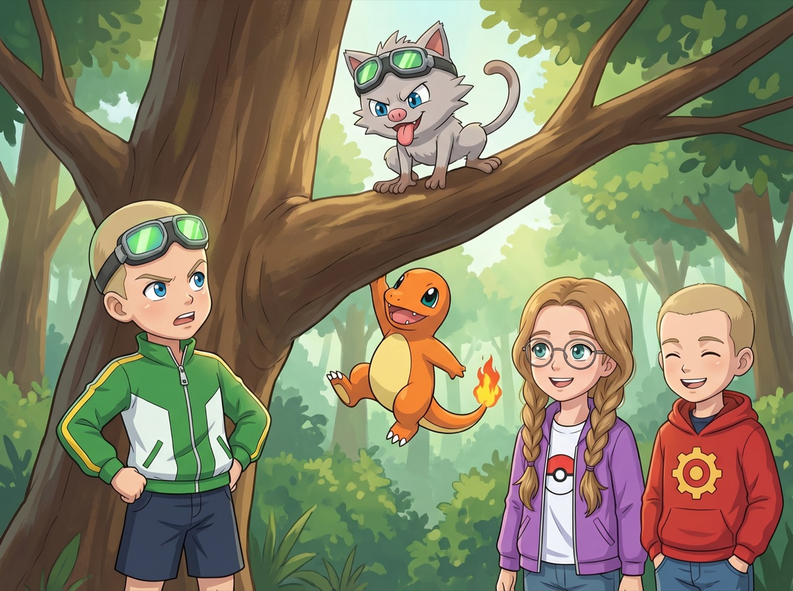
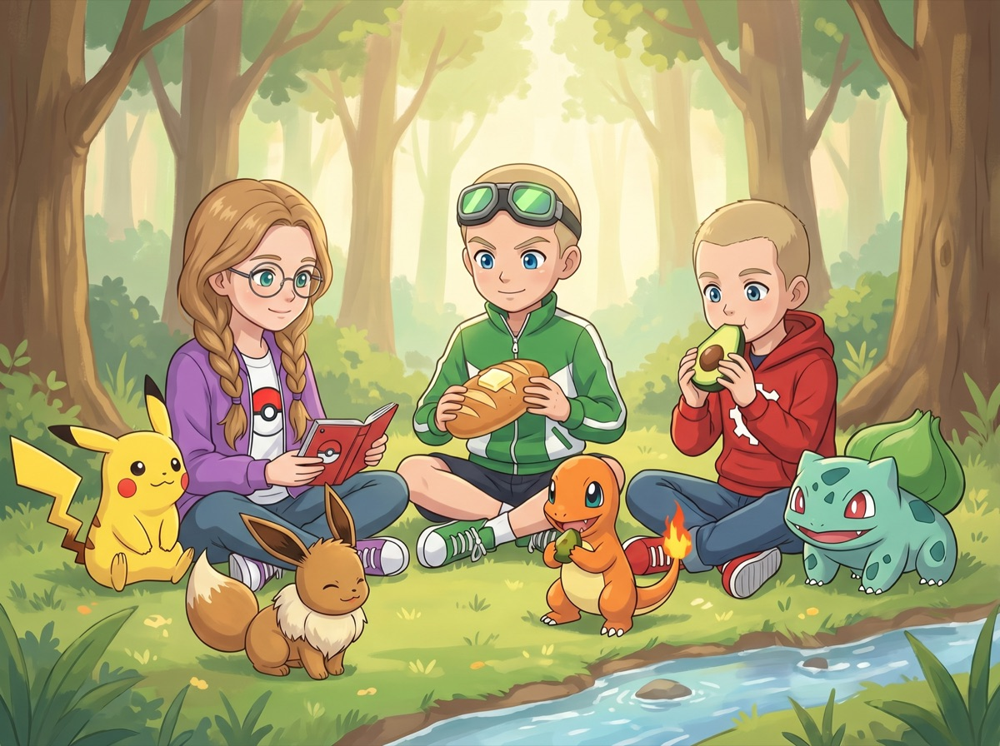
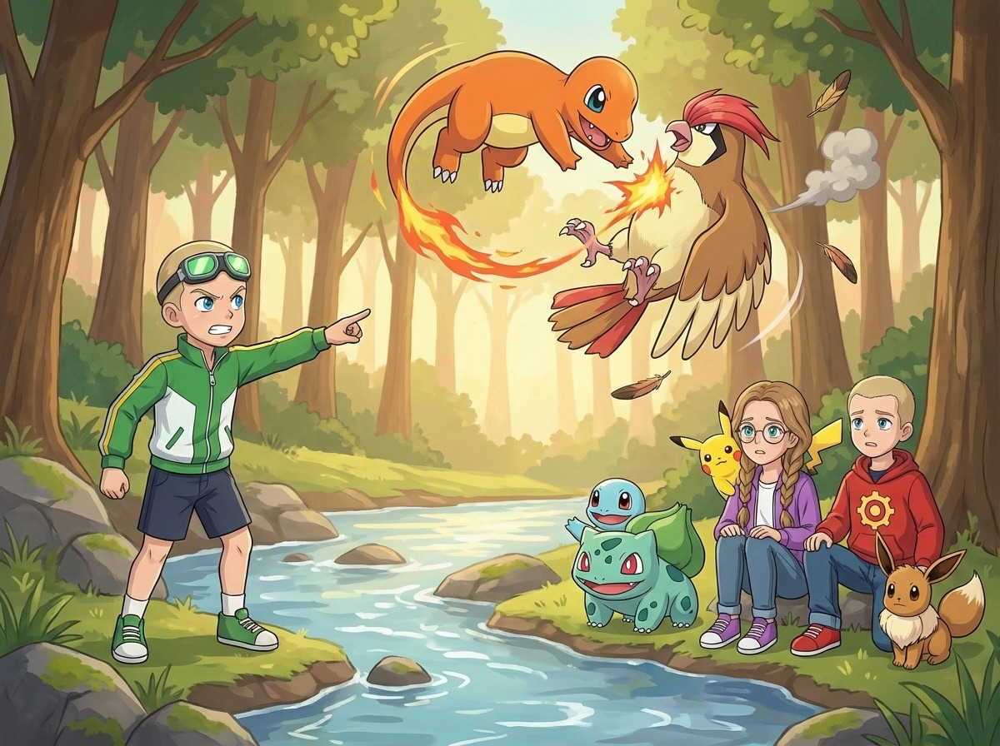
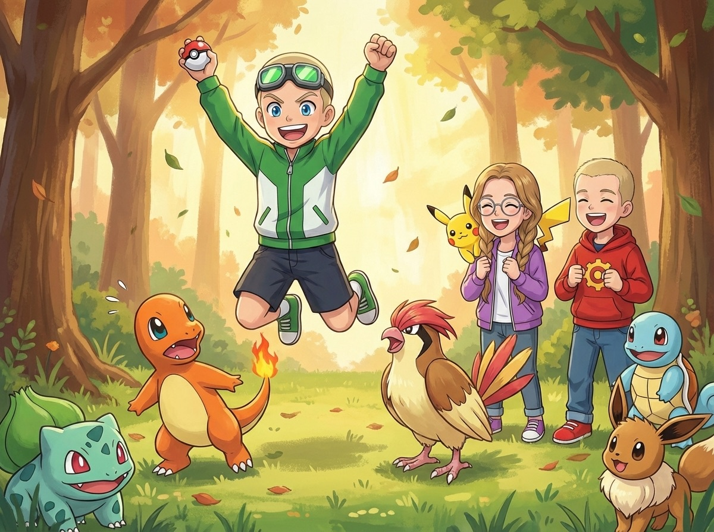
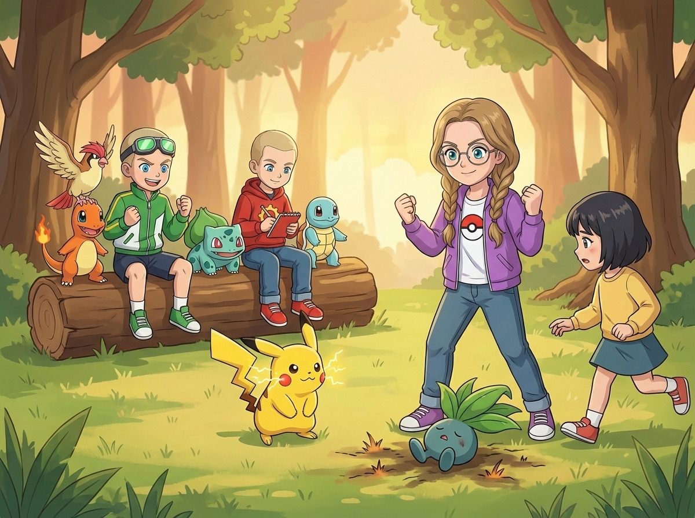
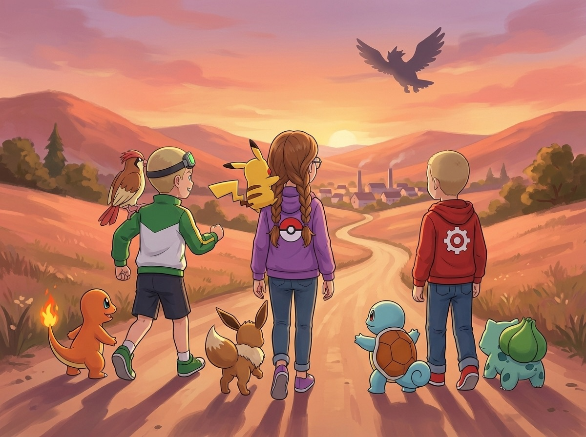

Сезон 1 — Три тренера и тайна Серебряного леса
Эпизод 5. «Охота на ветер»
Обезьяна и очки
Из Каменного Брода уходили героями. Хозяйка гостиницы сунула им в рюкзаки пирожки и ягоды. Мальчишка, у которого пропадал Катерпи, помахал им с моста. Ромус выпустил Бульбазавра из покебола — пусть идёт рядом, привыкает.
Дорога вилась через лес. Высокие деревья смыкались кронами, и солнечные пятна прыгали по тропинке, как маленькие покемоны.
Макстер шагал впереди. Зелёные очки-гоглы блестели на лбу, Чармандер (Charmander) бежал рядом, хвост покачивался из стороны в сторону.
— Мне нужен второй покемон, — заявил Макстер. — У Ромуса уже два. У Кристи два. А у меня один.
— Терпение, — отозвался Ромус, шагая позади с Бульбазавром (Bulbasaur) и Сквиртлом (Squirtle). Бульбазавр шёл чуть позади Сквиртла — пока ещё привыкал к команде, но уже не отставал. Красная худи Ромуса мелькала между деревьями.
— Терпение — это для тех, кто не торопится, — возразил Макстер.
— Именно.
Кристи шла посередине, Пикачу (Pikachu) на плече, Иви (Eevee) у ног. Круглые очки в тонкой оправе поблёскивали в пятнах света. Она листала Покедекс.
— В этом лесу водятся Мэнки (Mankey), Пиджеотто (Pidgeotto), Одиш (Oddish) и...
Она не успела закончить.
Что-то серое мелькнуло в ветвях. Маленькое, круглое, с длинным хвостом — прыг! — и очки-гоглы исчезли с головы Макстера.
— Эй!
На ветке сидел Мэнки. Маленькая обезьянка с белой шерстью и круглыми бешеными глазами. На голове — зелёные гоглы Макстера. Мэнки нацепил их себе на нос и выглядел невероятно довольным.
— Мэн-ки! — пропищал он и показал язык.

— Он украл мои гоглы! — Макстер подпрыгнул. — Чармандер, за ним!
Чармандер рванул к дереву. Мэнки перепрыгнул на соседнюю ветку. Чармандер полез по стволу — когти скользили по коре.
— Чар! — Чармандер сорвался и шлёпнулся на спину.
Мэнки захихикал сверху. Сквиртл покосился на Макстера с сочувствием. Бульбазавр сдержанно молчал.
— Ладно, — Макстер сжал кулаки. — Чармандер, Ember!
Чармандер выдохнул струю огня в сторону Мэнки. Обезьянка увернулась — огонь опалил ветку, но Мэнки уже был на другом дереве.
— Покебол! — Макстер бросил.
Покебол попал в Мэнки. Красный луч. Мэнки втянулся внутрь. Покебол упал на ветку.
Затрясся раз... два...
Лопнул. Мэнки выскочил — ещё злее. Гоглы сползли ему на шею, как ожерелье.
— Ещё раз! Чармандер, Quick Attack!
Чармандер рванул вверх по стволу, но Мэнки пнул его лапой — Чармандер кубарем полетел вниз. Макстер бросил второй покебол. Мэнки даже не дал ему долететь — отбил хвостом, как теннисную ракетку.
— Мэн-ки-ки-ки! — Обезьянка захохотала и унеслась в лес, сверкая зелёными гоглами.
Макстер стоял с пустыми руками. Чармандер сидел на земле, обиженный. На хвосте пламя потухло почти полностью — расстроился.
— Он забрал мои очки, — тихо произнёс Макстер.
— И два покебола, — добавил Ромус.
— Это не помогает.
Иви подошёл к Чармандеру и ткнулся носом в лапу. Мол, не грусти. Пламя на хвосте чуть ожило.
Ромус подумал.
— Может, сначала очки найди. Покемонов можно поймать других. Очки — нет.
— Мои гоглы... — Макстер схватился за голову. — Они светятся в темноте! Они единственные!
— Расслабься, — Кристи положила руку ему на плечо. — Они далеко не убежали. Мэнки территориальные — он не уйдёт дальше сотни метров от своего дерева. Мы найдём.
Пикачу навострил уши. Прислушался. Потом ткнул лапкой вправо — оттуда доносился тихий визг Мэнки.
— Пика. — Мол, «туда».
Пикачу повёл их на звук. Через десять минут нашли гоглы — Мэнки бросил их на пеньке, потеряв интерес. Рядом валялись ореховые скорлупки. Обезьянка сидела на дереве и ела что-то другое. Два покебола лежали тут же — Мэнки они были не нужны.
Макстер схватил гоглы и прижал к груди.
— Больше никогда.
— Ну и беги! — проорал он в сторону Мэнки. — Всё равно поймаю кого-нибудь круче!
Мэнки показал язык. Опять.
Привал и открытие
На поляне у ручья устроили привал. Ромус достал из рюкзака еду — хлеб, ягоды Оран, авокадо. Разрезал авокадо ножом аккуратно, на ровные дольки.
— Ты серьёзно ешь это зелёное? — скривился Макстер, откусывая огромный кусок хлеба с маслом. Масло было толщиной с палец.
— Это полезно, — ответил Ромус.
— Это похоже на покемона, который растаял.
— Макстер, ты ешь масло кусками, — заметила Кристи. — Тебе вообще нельзя комментировать чужую еду.
Чармандер сидел рядом с Макстером и смотрел на масло с надеждой. Сквиртл аккуратно ел ягоду, придерживая её двумя лапками. Бульбазавр лежал на солнце — луковица на спине тихо поблёскивала, заряжаясь.
Иви ел свою ягоду с выражением аристократа. Медленно, аккуратно. Пикачу уже доел и теперь наблюдал за Иви с видом «ну сколько можно». Новичок Бульбазавр держался особняком, но когда Сквиртл подвинул ему ягоду — взял.
— Бульба, — буркнул он. Тихо. Но это было первое слово, которое он произнёс в команде.

Вдруг — тень.
Большая птица пронеслась над поляной, обдав ветром.
— Пидж! — раздался крик сверху.
Все подняли головы. Над деревьями кружил Пиджеотто — крупная птица с коричневыми крыльями и яркой красной полосой на голове. Он описал круг, нырнул к ручью, схватил рыбу — и взмыл обратно.
— Вот это да, — выдохнул Макстер. Глаза загорелись.
— Пиджеотто, — прошептала Кристи. — Летающий тип. Быстрый, манёвренный. Атаки: Gust, Quick Attack, Wing Attack.
— Он будет мой, — решил Макстер.
— Подожди, — Ромус поднял руку. — Не лезь сразу. Давай понаблюдаем.
— Наблюдать?! Он улетит!
— Макстер, ты только что потерял два покебола, потому что не подготовился, — спокойно напомнила Кристи.
Макстер открыл рот. Закрыл. Она была права.
— Подожди. Тут есть закономерность. Он кружит над одним местом — это его территория. Никуда не денется.
Ромус достал блокнот. Не чтобы сидеть и записывать — чтобы быстро набросать схему.
— Смотри. Он летает по кругу — от высокого дуба к ручью и обратно. Снижается только к воде. Если перехватить его у ручья, когда он ныряет за рыбой — будет момент, когда он медленный.
— А если он не нырнёт?
— Нырнёт. Он голодный. Третий круг подряд.
Кристи добавила:
— Летающие уязвимы к электричеству — Пикачу бы справился лучше. Но у тебя Чармандер. Значит, придётся брать скоростью и точностью, а не типом.
— Quick Attack плюс Ember, — кивнул Макстер. — Как с Джиодудом.
— Только быстрее, — уточнил Ромус. — Пиджеотто — не камень. Он не будет стоять и ждать.
Бой в небе
Макстер встал у ручья. Чармандер рядом — лапы чуть согнуты, пламя на хвосте горит ярко. Оба напряжены. Оба готовы.
Ромус и Кристи отошли к деревьям с покемонами. Бульбазавр настороженно следил за небом. Сквиртл стоял наготове — если Чармандер опять что-нибудь подожжёт.
Пиджеотто описал ещё один круг. Нырнул к воде.
— Сейчас! — крикнул Макстер. — Quick Attack!
Чармандер рванул с места. Оранжевая полоса — удар! Чармандер врезался в Пиджеотто в момент, когда тот касался воды. Птица отлетела в сторону, теряя рыбу.
— Пидж! — Пиджеотто рассерженно взмахнул крыльями.
Но он не улетел. Развернулся и ударил — Gust! Мощный порыв ветра сбил Чармандера с ног. Тот покатился по траве.
— Чар! — Чармандер вскочил, фыркнул.
— Ember! — скомандовал Макстер.
Чармандер дохнул огнём. Пиджеотто увернулся — взмыл вверх, закрутился и атаковал сверху. Wing Attack! Крыло ударило Чармандера по спине — тот упал на колено.
— Он быстрее! — Кристи подалась вперёд. — Макстер, не стой! Двигайся вместе с Чармандером!
Макстер побежал вправо. Чармандер — за ним.
— Quick Attack — но не прямо! Сбоку!
Чармандер рванул по дуге. Пиджеотто не ожидал атаки сбоку — Чармандер врезался ему в бок. Птица закрутилась в воздухе.

— А теперь — Ember!
Чармандер дохнул огнём в упор. Пиджеотто вскрикнул — перья задымились. Он тяжело махал крыльями, теряя высоту. Но не сдавался — развернулся для ещё одной атаки.
— Он не отступает, — оценил Ромус. — Сильный.
— Как и я, — усмехнулся Макстер.
Макстер достал покебол. Бросил.
Покебол попал. Красный луч. Пиджеотто втянулся.
Покебол упал на траву. Затрясся.
Раз.
Два.
Покебол лопнул. Пиджеотто вырвался — сердитый, но ослабленный. Он попытался взлететь, но левое крыло не слушалось.
— Чармандер, последний рывок! Quick Attack — в лапы!
Чармандер рванул низко, почти по земле, и ударил Пиджеотто по лапам. Птица потеряла равновесие и села на траву.
Макстер бросил второй покебол.
Попал.
Покебол упал. Затрясся.
Раз.
Два.
Три.
Тишина.
Щёлк.
— ДА! — Макстер подпрыгнул так высоко, что Чармандер испугался.

— Чар?! — Он отпрыгнул.
— Поймал! Чармандер, мы поймали!
Макстер подбежал к покеболу, поднял. Нажал кнопку.
Пиджеотто появился рядом. Большой — больше, чем казался в небе. Коричневые крылья сложены, красная полоса на голове топорщится. Он смотрел на Макстера строго.
— Пидж, — произнёс он. Не дружелюбно. Но и не враждебно. Оценивающе.
— Привет, — Макстер улыбнулся. — Хороший бой.
Чармандер подошёл к Пиджеотто и протянул лапу. Пиджеотто посмотрел на лапу. Потом наклонил голову и коснулся её клювом. Осторожно.
— Чар, — кивнул Чармандер. Мол, добро пожаловать.
Первая победа Кристи
Пока Макстер праздновал, Кристи заметила девочку на другом конце поляны. Примерно их возраста, с короткой тёмной стрижкой и рюкзаком, из которого торчал покебол. Рядом — маленький голубой покемон с листом на голове.
— Одиш, — прошептала Кристи. — Травяной и ядовитый тип.
Девочка тоже заметила Кристи. Подошла.
— Привет. Ты тренер?
— Да, — Кристи выпрямилась. Сердце стукнуло быстрее. Она никогда не билась с другим тренером. Только с дикими покемонами и злодеями. Но настоящий тренерский бой — первый.
— Я Мию. Хочешь бой?
Кристи посмотрела на Пикачу. Пикачу посмотрел на неё. Кивнул. Один раз. В переводе: «Давно пора.»
— Хочу, — ответила Кристи.
Макстер и Ромус сели на поваленное дерево. Макстер с новым Пиджеотто на плече — тот всё ещё озирался, привыкая. Ромус раскрыл блокнот — на этот раз не планировать, а записать бой Кристи. Для будущего анализа.
— Одиш, вперёд! — скомандовала Мию.
— Пикачу, готов? — Кристи поправила очки.
— Пика! — Пикачу спрыгнул с плеча и встал в боевую стойку. Щёки заискрились.
Одиш выпустил облако ядовитой пыльцы. Фиолетовый туман поплыл к Пикачу.
— Уклонись! Вправо! — скомандовала Кристи.
Пикачу метнулся вбок. Пыльца прошла мимо.
— Thundershock!
Молния ударила Одиша. Маленький покемон подпрыгнул, листья затряслись. Но устоял — электричество не очень берёт травяных.
— Одиш, Acid! — скомандовала Мию.
Одиш выпустил струю фиолетовой кислоты. Пикачу увернулся, но капли попали на хвост.
— Пика! — Пикачу сморщился, тряхнул хвостом.
На поваленном дереве Макстер беззвучно сжал кулаки. Ромус не отрывался от блокнота — записывал.
Кристи стиснула кулаки. Она хотела выиграть. Очень хотела. Сердце колотилось. Но голова была ясной.
— Одиш, Acid! — снова скомандовала Мию.
Вторая струя кислоты. Пикачу отпрыгнул, но капли брызнули на траву рядом — та зашипела и почернела.
— Пика! — Пикачу отскочил дальше. Опасно.
На поваленном дереве Макстер подался вперёд. Ромус не поднимал головы, но карандаш в его руке двигался быстрее.
Кристи проглотила волнение. Одна мысль — чётко, ясно: Одиш медленный. У нас есть скорость.
Пикачу посмотрел на неё через плечо. Кивнул. Мол, «давай».
— Quick Attack — и сразу Thundershock в упор!
Пикачу рванул вперёд — жёлтая молния. Врезался в Одиша — тот покатился.
И тут же — разряд! Молния ударила в упор. Одиш вздрогнул и упал на бок. Листья обвисли.

— Одиш! — Мию подбежала. Подняла покемона. — Ты в порядке?
— Одиш... — слабо отозвался тот. Устал, но жив.
Мию выпрямилась. Улыбнулась.
— Сильный Пикачу. Хороший бой.
— Спасибо, — Кристи выдохнула. Щёки горели. — Ты тоже хорошо билась.
Пикачу подошёл к Одишу и протянул лапку. Одиш ткнулся в неё листом. Мир.
Макстер захлопал:
— Кристи, это было круто! Ты его за два хода!
— Три, — поправил Ромус, не отрываясь от блокнота. — Уклонение, Thundershock, Quick Attack плюс Thundershock. Три.
— Всё равно быстро!
Кристи улыбнулась. Не широко — сдержанно. Но глаза за очками светились.
Первая победа в настоящем тренерском бою. И она хотела ещё.
Пикачу запрыгнул на плечо и потёрся головой о её щёку.
— Пика-пика. — Мол, «мы — команда».
Дорога впереди вилась через холмы. Где-то за лесом виднелись крыши следующего города — Речной Порт. Мию сказала, что там проводят мини-турниры для начинающих тренеров.
— Турнир! — загорелись глаза у Макстера.
— Я тоже хочу, — тихо произнесла Кристи. После сегодняшней победы она чувствовала: это её путь.
Ромус кивнул.
— Нам всем не помешает потренироваться. — Он захлопнул блокнот. — И у меня есть пара идей насчёт Бульбазавра и Сквиртла вместе. Комбинации.
Макстер ускорил шаг. Теперь у него был Пиджеотто. У Кристи — первая победа. У Ромуса — записи обоих боёв в блокноте.
Бульбазавр наконец пошёл рядом со Сквиртлом. Не позади — рядом. Прогресс.
Пиджеотто сидел на плече у Макстера — тяжёлый, но Макстер не жаловался. Чармандер шёл рядом и иногда поглядывал на Пиджеотто снизу вверх. Новый напарник. Надо привыкнуть.
Где-то в лесу за ними Мэнки сидел на ветке и грыз орех. Без гоглов. Без покеболов. Скучно. Но он запомнил мальчика в зелёной куртке. Запомнил надолго.

А высоко над тропой, не издавая звука, парил чей-то покемон. Не Пиджеотто — этот был темнее и крупнее. Он описал круг над головами героев и бесшумно скользнул в сторону следующего города. Никто не поднял головы.
Урок этого эпизода
Не каждая попытка заканчивается успехом — но каждая делает тебя опытнее.